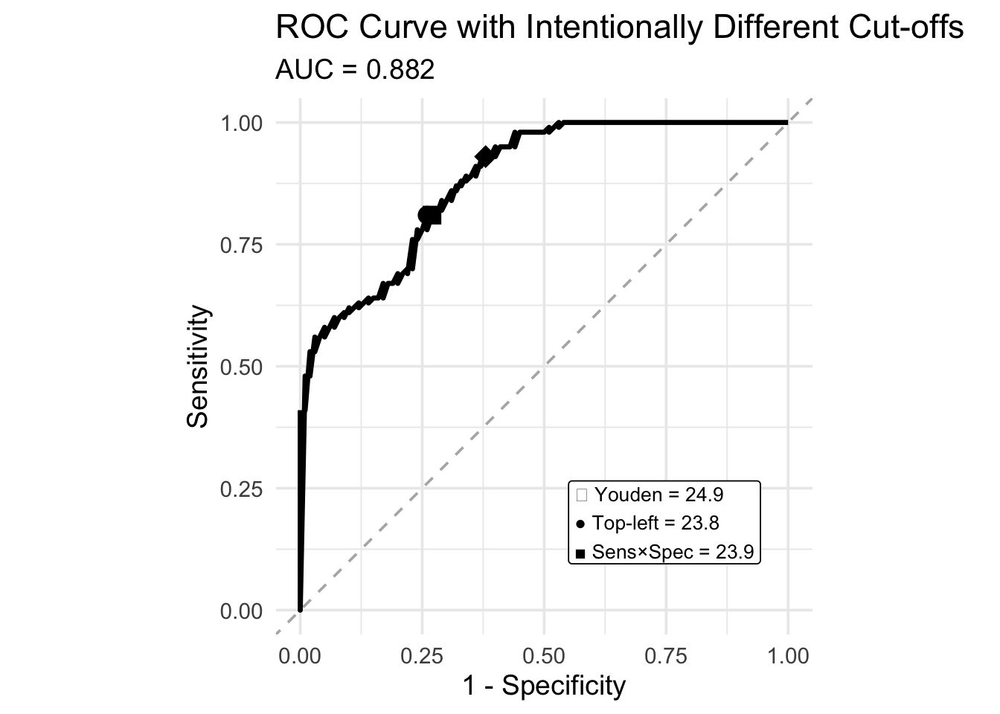

Type 'citation("pROC")' for a citation.
Attaching package: 'pROC'The following objects are masked from 'package:stats':
cov, smooth, var
感度 (sensitivity) と特異度 (specificity)
ROC 曲線 (Receiver Operating Characteristic curve)
カットオフ値:
たとえば、100 人に認知症スクリーニング検査をしたとします。このスクリーニングツールは 30 点満点で、23 点以下が検査陽性であったとします。
実際の診断結果 (真実) は次の通りだったとします。
検査結果はこうでした。
| 実際に病気あり | 実際に病気なし | 合計 | |
|---|---|---|---|
| 検査陽性 | 18 | 10 | 28 |
| 検査陰性 | 2 | 70 | 72 |
| 合計 | 20 | 80 | 100 |
感度は、スクリーニングツールで本当に病気の人をどれだけ正しく見つけられるか、です。
式は 感度 = TP / ( TP + FN )
感度 = 18 / (18 + 2 ) = 90%
意味は、このスクリーニングツールで、病気の人 20 人のうち 18 人を正しく陽性と判定した、ということです。その一方で、2 人の病気の人は拾えていません。
また、10 人の病気でない人も陽性となっています。この情報は感度には入りません。
特異度は、病気でない人をどれだけ正しく陰性にできるか、です。
式は 特異度 = TN / (TN+FP)
特異度 = 70/(70 + 10) = 87.5%
意味は、このスクリーニングツール・カットオフ値で、病気でない 80 人のうち 70 人を正しく陰性と判定した、です。一方で、10 人の病人も陰性と判定してしまいました。
また、2 人の病気の人も陰性となっています。この情報は特異度には入りません。
ROC 曲線は、連続値の検査スコアで、どのカットオフ値がよいかを評価するための図です。 前回の感度・特異度の話とつながるので、MMSE を例に説明します。
たとえば、30点満点のスクリーニングテストで病気を判定するとします。
一般に
です。例えばカットオフ値を 23 点以下 = 有病疑いとすると、感度・特異度を計算できます。ただし、カットオフは 23 点だけではありません。
など、いろいろ試せます。
ROC 曲線は、全てのカットオフ値での感度・特異度をまとめて可視化したものです。
Type 'citation("pROC")' for a citation.
Attaching package: 'pROC'The following objects are masked from 'package:stats':
cov, smooth, var
縦軸は 感度(Sensitivity)、つまり縦 = 見逃さない割合です。横軸は 1−特異度(Specificity) 、つまり誤って陽性にする割合です。
点線の対角線は、ランダム判定です。この線に近いほど性能が悪いです。
カットオフ値の決め方には、以下のようなものがあります。